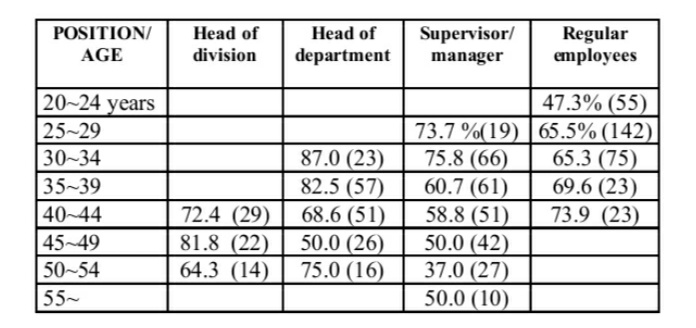

4. Each idea written on the flip chart is sequentially presented and discussed.
5. Preliminary vote of item importance is requested. Individual judgments of
each idea are expressed by a numerical ranking system and an average
value of the group preference for each idea will be defined. This average
value serves to express the mathematical evidence of the increase or
decrease of a group’s preference.
6. New discussions and new voting are permitted.
7. Final vote.
During the step 3 and 4, the leader passes out 5 to 9 cards to each individual.
Each individual is then asked to make a priority list containing a list of 5 to 9 most
important items. Evidence indicates that individuals can accurately rank items
of lists of this size.
Strategic Options Development and Analysis (SODA)
SODA is a methodology oriented to structure a complex problem with the
support of a reduced number of persons. The basic tools used are: the
cognitive map that helps to identify the objectives of the problem, the key-
ideas that directs the decision process, and the actions to be taken to solve the
problem. An interactive software called COPE-Cognitive Policy Evaluation
is used to give support to the decision process.
Group Decision Support System or GDSS is a system whose design, structure,
and utilization reflect the manner in which members of a group interact to
choose an alternative of decision. The system should have technological
support for communication, file sharing, modeling activities in group, aggregat-
ing individual perspectives to form a group perspective, and other facilities that
permit interaction within the group. The GDSS can encompass all the sectors
of an organization or only certain activity sectors, with the possibility of
expanding the participation of individuals according to the functional level of the
sectors involved. The GDSS is programmed to accept appropriate input data,
to analyze the objectives (such as productivity, profitability, etc.) and to
provide solutions to the selected problems, generating the appropriate reports.
GDSS may be concerned with the problem of communication media richness.
Media richness is defined as the potential information-carrying capacity of a
data-transmission medium. Different types of media, differing in their richness,
may be appropriate for different types of tasks. For instance, according to
Mallach (2000), face-to-face contact is the highest ranked medium in richness,
followed by video conference, audio conference, real-time electronic chat, and
finally, electronic mail. Electronic mail is ranked as the medium with lowest
richness. In the face-to-face contact, GDSS must consider that participants
should be in the same place and they should work at the same time. In the
case of a video, audio conference as well as real-time electronic chat,
participants may be in different places but they should work at the same time.
Using electronic mail, participants may be in different places doing work at
different times.
Authors (Mallach, 2000; and Turban & Aronson, 1998 ) report the following
three general types of GDSS:
- Communication Management System:
provides communication flows
by means of facilities to store and exchange messages. Common examples
of this type of system are the electronic mail packages.
- Content Management Systems:
provides automatic routing of mes-
sages according to the contents in a standardized way.
- Process Management Systems:
provides important aid in both indi-
vidual and group decision making process controlling: the pattern, con-
tents, timing, and flow of the information exchange. Control of pattern and
contents of the message can be made by
forms represented by different
types of documents. Control of timing and flow can be made by a
script
that defines the routing of the form. A Work Flow system, considered as
an “intelligent electronic mail” is an example of this type of GDSS.
These different types of GDSS can be used to manage differences of opinion,
focus on the goal of the strategic decision, control the time factor, lead to
objective analysis and judgments. The following Case Study One serves to
illustrate the application of group-decision-making methods.
Decisions that Depend on the
Behavior of Persons
Decision models suppose that the decision maker resolves a problem by
choosing the best alternative in terms of gain or profit. In Decision Analysis
Theory and Game Theory this aspect is rigorously obeyed, even though in the
majority of cases the formulated alternatives are simplified or condensed
versions of the possible states of nature. In real-life problems, we also need to
take into consideration the behavior of the individuals or organizations involved
in the decision. Several authors (Cohen et al., 1972; Takahashi, 1997) present
their research results involving the problem of behavior in decisions.We can
classify decision problems according to the behavior of persons or organization
as:
a. Decision for the Complete Resolution of the Problem. A decision is
made to choose one of the possible alternatives, which proposes to
resolve the problem completely. All decision models from Game Theory
and Decision Analysis pertain to this category.
b. Decision by Oversight. In this case, the decision is made in a superficial
or negligent way without any criteria for analyzing the problem. As an
example, we cite the case of hiring someone without examining their
resume, or without having them tested or submitted to any training.
c. Decision by Flight. Encompasses problems approved (or abandoned)
due to difficulty in appropriately appreciating and resolving them, since
they involve conflicts of interest, lack of objectives, lack of interest, lack
of time, etc. The adoption of changes suggested by an anonymous letter
could serve as an example for this type of decision.
These three types of situations can be represented by the garbage can model
shown in the section titled Garbage Can Model.
Garbage Can Model
The garbage can model proposed by Cohen et al. (1972) pictures the problem
of decision-making as enormous garbage can where problems to be resolved
are put. Well-structured problems or those with a higher priority are resolved
and taken out of the can. The other problems are taken out after a superficial
examination or are taken out of the can because they are taking up space. Many
neglected problems remain on the bottom of the garbage can, which requires
the periodic emptying.
The garbage can model is made up of the following elements:
1. Decision Mechanism:is a structure or instance for deciding a problem,
spending a certain amount of ENERGY, according to the difficulty or
interest in resolving this problem. Examples: decision making meetings,
hiring committees, committees for firing or promoting employees, parlia-
ment, congresses, etc.;
2. Participants: are people or organizations that are part of the decision-
making mechanism and spend a certain amount of ENERGY (time,
knowledge, money) to try to resolve a problem;
3. Problems: are proposals presented to the decision mechanism;
4. Solution to the Problem: decision alternatives chosen for each problem.
The occurrence of oversight or flight-type decisions can be linked to the greater
or lesser importance or priority attributed to a problem. These decisions may
occur due to the existence of the phenomenon called organizational anarchy.
According to Cohen et al., organizational anarchy may be the result of the
existence of many problems which are difficult to describe in a precise way.
Some reasons for the existence of organizational anarchy are:
1. decision participants lack clarity in defining and selecting problems;
2. difficulty in describing and applying a technology or former experience to
the solution of the similar problem;
3. existence of multiple restrictions or conditions imposed on the problem
which disperse decision maker’s attention;
4. irregular, sporadic, or inadequate participation of persons or group of
persons so that the level of energy available to resolve problems is uneven.
Organizational anarchy can be found, for instance, in some university (or some
public agency) where:
Table 13.1. Some rate of occurrence of decisions of the oversight or flight
type, in different positions and age groups (% and total number of
persons) (adapted from Takahashi, 1997)

1. Several decision-making organisms (schools, departments, committees,
projects, etc.) are created and their problems are thrown in the garbage
can represented by the university.
2. The methods employed (such as teaching, research, evaluation methods,
etc.) provide uncertain results for the development of the university.
3. Professors, students, employees or community representatives partici-
pate in an irregular fashion in the decision making organisms of the
university.
Table 13.1 presents the partial result of a research to evaluate the number of
persons (according to position and age group) that have had experience in
adopting a decision of this type (flight or oversight).
According to this research, high rates of decision by oversight or flight are
observed in the first age intervals for heads of division, department, and
supervisor/managers groups. Inside regular employees, the rate of decision by
flight or oversight increases according to the age interval. Answers from groups
with less than 10 persons were discarded.
The Impact of Psychological Types
In the behavioral model of decision making, it is important to consider the
behavior of each person or group of persons regarding the psychological